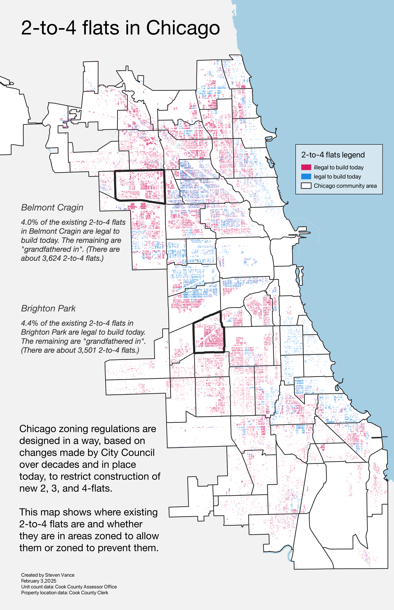
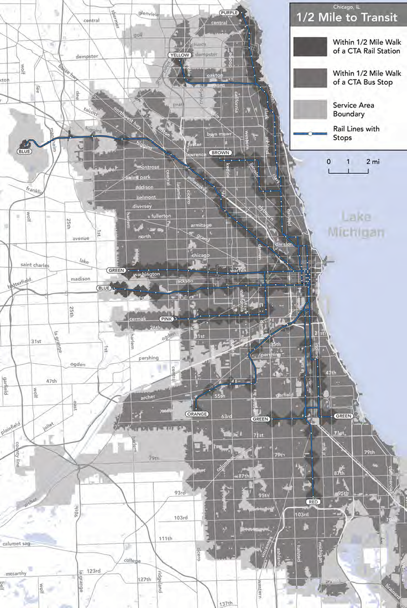
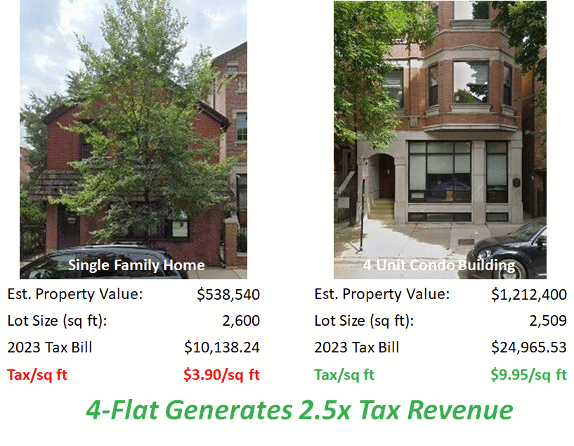

The Problem
Chicago's current zoning laws, which favor single-family homes and restrict higher-density developments, significantly hinder the city's housing supply and economic growth. The 2 to 4 unit housing stock has long played a unique and critical role in Chicago's overall housing supply by providing affordable rental housing, homeownership, and wealth-building opportunities.
As documented by the Institute of Housing Studies, 2 to 4 unit properties are the most likely to offer lower-cost rents and family-sized units. These units make up a substantial portion of the housing supply for Chicago's working class and communities of color, particularly the city's Black and Latino communities.
Restrictive single family home only zoning policies limits the construction of these multi-unit buildings. This exacerbates the housing shortage - driving up prices, accelerating conversion of existing 2 to 4 unit stock to single family homes, and thus making it difficult for many residents to find affordable housing. Since 2013, Chicago has lost more than 4,800 2 to 4 unit buildings representing 11,775 rental and owner-occupied housing units or 4.2 percent of its stock of parcels and housing units.
Additionally, reduced population density hurts local businesses' ability to thrive, ultimately impacting the city's overall economic vitality. Reforming outdated and exclusionary single family only zoning is crucial for fostering a more inclusive, affordable, and economically dynamic Chicago.
The Solution
Updating citywide zoning to a minimum of RT-4 everywhere (Residential Two-Flat, Townhouse and Multi-Unit District) will significantly increase the city's "family-sized" housing stock that working class families most rely on. Additionally, doing so will cut the red tape associated with individual project by project approvals and reduce barriers to development for affordable housing and smaller-scale community developers.
This will have the added benefit of speeding up the development process which will make it easier for smaller scale developers to build affordable housing. By allowing 4-flats to be built "as of right", we can dramatically help increase housing density and affordability, while making our streets more walkable and transit-friendly.
Our ask builds off the successful recent initiatives by Chicago's alderpersons to address this challenge:
- The Upzoning of Western Avenue by Alderman Vasquez, Alderman Martin, and Alderwoman Hadden, allowing 3-5 story residential buildings to be built "as of right" – without having to go through an arduous or contentious rezoning process
- The Northwest Side Housing Preservation Ordinance by Alderpersons Carlos Ramirez-Rosa, Daniel La Spata, Jessie Fuentes, Byron Sigcho-Lopez, Ruth Cruz, Felix Cardona and Rossana Rodriguez-Sanchez, which allowed two-flats as of right on all standard size parcels zoned RS-3
Benefits to Chicago's residents and businesses
- Providing Missing Middle Housing: RT-4 zoning will spur the construction and preservation of much needed "missing middle" housing, such as duplexes, triplexes, and small apartment buildings. These housing options are crucial for providing affordable and diverse living spaces for a wide range of residents, including young professionals, families, and seniors. Studies by DePaul University have noted that 2 to 4 unit flats in Chicago are typically more affordable, more "family-sized" and especially critical as a source of housing for Black and Latin renters.
- Correct the history of exclusionary zoning: Since zoning was first introduced in Chicago in the early twentieth century, it has been utilized by privileged groups to maintain the city's socio-economic divisions. Much of the downzoning in the 1970s, including opposition to multi-unit family residences, was advocated by wealthy neighborhood groups as an attempt to keep affordable new units from being developed. By enabling the development of diverse housing types, RT-4 zoning can help lower-income families, often disproportionately from racial minority groups, to move into areas with better access to jobs, schools, and amenities, fostering greater economic opportunities.
- Support local and small businesses: Creating vibrant, walkable neighborhoods where residents can easily access shops and services will boost foot traffic and help increase sales for local businesses.
- Support Chicago's tax base and fiscal situation: More housing opportunities will not only enhance the quality of life for the community, but also boost the city's economy through increased tax revenues from a larger base of residents in these neighborhoods.
Similar advances in other cities:
- Minneapolis, Minnesota: Minneapolis was the first major city in the U.S. to eliminate single-family zoning citywide in 2018.
- Portland, Oregon: Portland followed suit, implementing reforms in 2021 to allow for more diverse housing types in areas previously zoned for single-family homes.
- Sacramento, California: Sacramento has also made significant changes to its zoning laws to allow for multi-unit housing in areas that were once restricted to single-family homes.
Busting Four-Flat Myths
Addressing common concerns about zoning reform
Myth: Four-flats will ruin neighborhood character
Reality:
Four-flats are a traditional Chicago housing type that has existed in our neighborhoods for over a century. They can be designed to match existing architectural styles and fit seamlessly into our communities. Many existing four-flats would not be legal to build today!
Myth: Four-flats will make parking impossible
Reality:
Four-flats near transit reduce car dependency. Studies show that households near train stations own fewer cars. Modern zoning can require appropriate parking solutions when needed.
Myth: Four-flats will increase property taxes for everyone
Reality:
More housing units means a broader tax base, which can actually reduce the burden on individual homeowners while providing more revenue for schools and services.
Supporting Organizations
These organizations support re-legalizing four-flats across Chicago
- Abundant Housing Illinois
- Strong Towns Chicago
- UChicago Students Against Exclusionary Zoning
Want your organization to be listed? Contact us.
Get Involved
Join us in advocating for more housing choices across Chicago
We need your support to make four-flats legal once again across Chicago. Visit our Take Action page to learn how you can sign petitions, contact your alderperson, and attend upcoming events.
Take Action Now